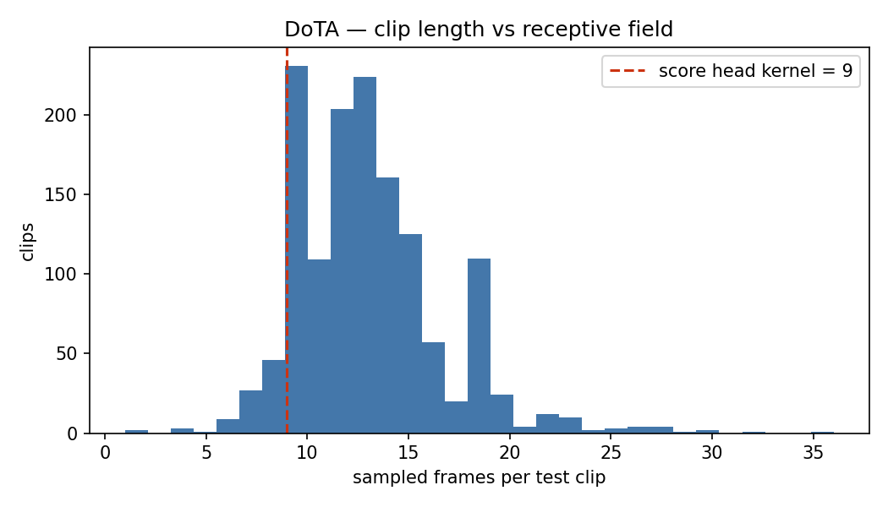
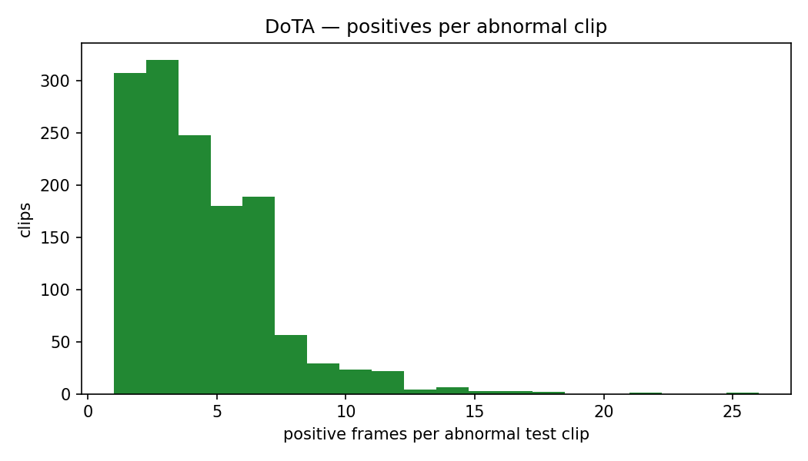
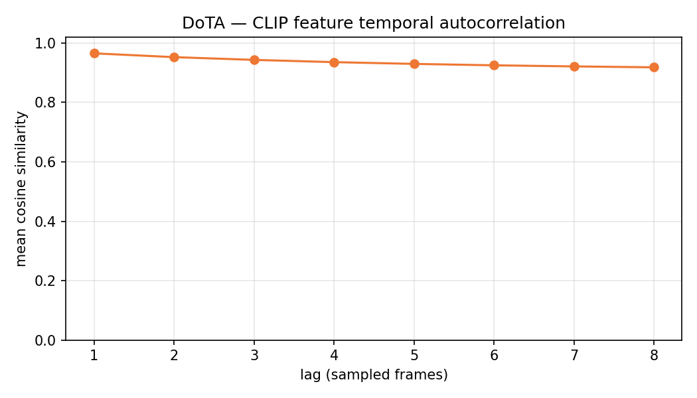

Mọi con số trong tài liệu này là thuộc tính của dữ liệu nằm trên đĩa, không phải kết quả của bất kỳ mô hình nào. Không có checkpoint nào được nạp, không có tham số nào được huấn luyện.
DoTA là corpus lành mạnh — ngược hẳn với DADA-2000. Nó vượt qua cả hai phép kiểm tra rò rỉ nghiêm trọng nhất, và điều đó chứng minh các phép kiểm tra ấy có tính phân biệt chứ không phải lúc nào cũng bật.
Không có rò rỉ độ dài clip. Bộ phát hiện chỉ đọc số frame đạt clip AUC 0.5280, micro AUC 0.4993 — đúng mức ngẫu nhiên. 0 clip normal nằm ngoài dải độ dài abnormal. Verdict C28 không kích hoạt.
Micro AUC ở đây là số trung thực. Clip oracle chỉ đạt 0.5017, tức phân loại clip gần như không mua được gì. Ngược hẳn với DADA (0.9086).
Đặc trưng CLIP có mang tín hiệu mức frame. Linear probe có giám sát đạt macro AUC 0.6708. Nghĩa là thiếu hụt nằm ở GIÁM SÁT, không ở BIỂU DIỄN — một head tốt hơn hoặc nhãn dày hơn có thể lấp; không cần đổi backbone.
Hai vấn đề còn lại đều ở mức HIGH và đều sửa được: MIL top-k suy biến thành max ở 99.9% clip, và 3 clip abnormal bị mất sạch cửa sổ nhãn.
Cảnh báo về giao thức: DoTA gần như toàn abnormal (1,394/1,397), nên --score-norm auto phân giải thành minmax. DADA dùng none. Trộn hai giao thức trong cùng một bảng là cách nhanh nhất để một checkpoint tốt đọc thành mức may rủi (bài học C12).
Length-only micro AUC
0.4993
Ngẫu nhiên → không rò rỉ. C28 âm tính.
Clip-oracle micro AUC
0.5017
Phân loại clip gần như vô dụng ở đây.
Frame probe macro AUC
0.6708
Đặc trưng CÓ tín hiệu mức frame.
Median clip length T
13
Lớn hơn kernel 9 — chỉ 12% clip bị nuốt trọn.
2. Ba phán quyết do công cụ EDA phát ra
Không có verdict CRITICAL nào. Hai HIGH đều là vấn đề cấu hình/dữ liệu sửa được, và verdict thứ ba là một tin tốt được ghi lại có chủ đích.
HIGH
MIL top-k thoái hoá thành một phép max thuần tuý
Đo được: 99.9% clip nhận k = 1 tại mil_topk_pct = 16: mỗi clip mỗi bước chỉ đóng góp đúng một frame được giám sát.
Cách xử lý: hạ loss.mil_topk_pct, hoặc chấp nhận rằng giám sát ở đây là mức clip và ngừng đọc các tuyên bố mức frame vào nó. Lưu ý: DoTA trong dự án này là benchmark zero-shot (0 clip train), nên tham số này chỉ ảnh hưởng khi ai đó quyết định huấn luyện trên nó.
HIGH
Clip abnormal nhưng vector nhãn toàn 0
Đo được: 3 clip được khai báo abnormal trong meta.json nhưng không còn frame positive nào sau khi lấy mẫu stride-8. Mọi chỉ số đang đếm chúng như clip normal.
Cách xử lý: loại chúng ở thời điểm chấm điểm (DADA_SETUP.md §5.1). Không "sửa" bằng --strict: cờ đó ném lỗi chứ không vá dữ liệu.
INFO
Đặc trưng CÓ mang tín hiệu mức frame
Đo được: linear probe có giám sát đạt macro AUC 0.6708 trên chính bộ đặc trưng đã cache mà các arm đã huấn luyện nhìn thấy.
Ý nghĩa: thiếu hụt nằm ở giám sát, không ở biểu diễn. Một head tốt hơn hoặc nhãn dày hơn có thể thu hẹp khoảng cách; không cần đổi backbone. Đây là điểm khác biệt quyết định so với DADA (0.5228).
3. Hình dạng corpus
Split
Clip
Abnormal
Normal
Frame (đã lấy mẫu)
train
0
0
0
—
test
1,397
1,394
3
18,369
Frame positive trong tập test: 6,086, tức 33.13% tổng số frame đã lấy mẫu — cao gấp 3.6 lần tỉ lệ của DADA (9.08%). Tập DVS có độ dài 0 → 0 bước/epoch.
DoTA ở đây là benchmark zero-shot thuần tuý. Split train rỗng theo thiết kế: trong KAT-VAD, mô hình được huấn luyện trên MSAD (hoặc DADA) rồi đánh giá zero-shot trên DoTA. Vì vậy mọi con số về DVS, MIL top-k và steps/epoch chỉ mang tính tham chiếu, trừ khi ai đó quyết định huấn luyện trên corpus này.
Chỉ có 3 clip normal trong 1,397. Đây là đặc tính định nghĩa của DoTA và là lý do bài học C12 tồn tại: khi tập test gần như toàn abnormal, gộp điểm thô qua các video sẽ đưa thang điểm tuyệt đối của từng clip vào bảng xếp hạng — negative của một clip "tự tin" sẽ xếp trên positive của một clip "do dự". Checkpoint gốc của LaGoVAD đạt 0.5055 với pooling thô nhưng 0.6142 với min-max theo clip (số công bố: 0.6260).
3.1. Phân bố độ dài clip
Phân bố
n
mean
p5
p25
p50
p75
p95
min
max
test (đã lấy mẫu)
1,397
13.15
8.0
11.0
13.0
15.0
19.0
1.0
36.0
train (đã lấy mẫu)
0
—
—
—
—
—
—
—
—
thô (trước stride)
1,397
101.57
61.0
83.0
99.0
115.0
151.0
6.0
284.0
Phân bố hẹp và đối xứng: p5 = 8, p95 = 19, tức 90% clip nằm gọn trong dải 8–19 frame. So với DADA (p5 = 3, p95 = 37.9) thì đây là một corpus được chuẩn hoá tốt hơn nhiều — và đó chính là lý do phép kiểm tra rò rỉ độ dài ở §9 cho kết quả âm tính.
4. Trường tiếp nhận của score head — bài học C27

Hình 1 — Độ dài clip so với trường tiếp nhận. Trục hoành: số frame đã lấy mẫu của mỗi clip test. Đường đứt đỏ là kernel size 9. Khác hẳn DADA: gần như toàn bộ khối lượng phân bố nằm bên phải đường đỏ, với đỉnh ở 10 và 13 frame. Chỉ một phần nhỏ (167 clip) nằm ở hoặc dưới ngưỡng kernel. Phân bố có dạng chuông lệch nhẹ với đuôi mỏng kéo tới 36 frame — dấu hiệu của một corpus được cắt theo quy tắc nhất quán.
Median clip length: 13 frame đã lấy mẫu.
Median tỉ lệ clip nằm trong một timestep đầu ra: 69.2% (DADA: 100%).
Số clip nằm hoàn toàn trong kernel: 167 (12.0%), chứa 7.3% tổng số frame test.
Vẫn đáng để mắt tới. C27 không kích hoạt thành verdict ở DoTA, nhưng median coverage 69.2% nghĩa là một timestep đầu ra điển hình vẫn tổng hợp hơn hai phần ba clip. Độ phân giải thời gian ở đây là thật nhưng thô. Nếu có lúc nào cần một tuyên bố định vị chặt chẽ trên DoTA, hạ score_head_kernel xuống 3 là bước đầu tiên — và nhớ rằng nó kích hoạt C2 với mọi cache hiện có.
5. Sàn MIL top-k
Clip có k = 1 (loss suy biến thành max thuần tuý): 1,395 (99.9%).
Median k: 1.0. Phân bố k: {1: 1395, 2: 2}.
Công thức thực tế trong tree là k = max(1, T // topk_pct) với topk_pct = 16 (core/losses/mil.py:16-22). Đây là phép chia nguyên chứ không phải nhân phần trăm — tên biến gây hiểu nhầm; thực chất nó lấy 1/16 ≈ 6.25% số frame. Muốn k = 2 thì cần T ≥ 32, nhưng p95 của DoTA chỉ là 19 và max là 36. Kết quả: đúng 2 clip đạt k=2, còn lại toàn bộ ở k=1.
Đây là mức suy biến còn nặng hơn DADA (90.3%). Nghịch lý biểu kiến — DoTA có clip dài hơn — có lời giải trong chính công thức: DADA đạt k > 1 nhờ đuôi clip normal rất dài (tới 72 frame), thứ mà DoTA không có (max 36, p95 = 19). Phân bố hẹp, chuẩn hoá tốt của DoTA lại đẩy toàn bộ clip xuống dưới ngưỡng T ≥ 32. Nếu định huấn luyện trên DoTA, hãy hạ mil_topk_pct (số nhỏ hơn = k lớn hơn, vì nó là mẫu số) trước, đừng chạy rồi mới đọc kết quả như một tuyên bố mức frame.
6. Phân nhóm theo metadata
6.1. Theo anomaly_class — 20 nhóm
Đây là tài sản lớn nhất của DoTA so với DADA: một hệ phân loại thật sự có 20 lớp, chia theo cặp {ego, other} × {9 kiểu va chạm + unknown}. Đây chính là loại tín hiệu mà nhánh H_mul phân loại đa lớp có điều kiện theo định nghĩa ngôn ngữ được thiết kế để khai thác.
Nhóm
Clip
Frame test
Frame positive
Tỉ lệ positive
ego: turning
279
3,309
1,040
31.43%
other: turning
205
2,683
765
28.51%
ego: lateral
153
1,992
734
36.85%
ego: moving_ahead_or_waiting
119
1,545
491
31.78%
ego: oncoming
104
1,331
391
29.38%
other: lateral
83
1,145
395
34.50%
other: leave_to_right
77
1,144
444
38.81%
other: moving_ahead_or_waiting
73
1,002
310
30.94%
other: leave_to_left
54
741
288
38.87%
ego: leave_to_left
45
657
313
47.64%
ego: leave_to_right
40
623
285
45.75%
other: oncoming
30
393
98
24.94%
other: pedestrian
21
284
75
26.41%
other: obstacle
20
245
82
33.47%
ego: unknown
18
238
82
34.45%
ego: pedestrian
18
232
64
27.59%
other: start_stop_or_stationary
17
260
54
20.77%
ego: obstacle
16
199
61
30.65%
other: unknown
14
205
76
37.07%
ego: start_stop_or_stationary
11
141
38
26.95%
Hai điều cần đọc từ bảng này. (1) Đuôi dài: nhóm lớn nhất có 279 clip, nhóm nhỏ nhất chỉ 11 — chênh 25×. Bất kỳ chỉ số nào tính riêng theo lớp trên các nhóm ≤ 20 clip đều có phương sai rất lớn; đừng đọc thứ hạng giữa chúng như một sự thật. (2) Tỉ lệ positive khá đồng đều, dao động 20.8%–47.6% quanh mức trung bình 33%. Không nhóm nào bị suy biến, nên phân nhóm này an toàn để dùng làm phân tích phân tầng.
6.2. Theo ego_involve
Nhóm
Clip
Frame test
Frame positive
Tỉ lệ positive
False (không liên quan xe ego)
594
8,102
2,587
31.93%
True (xe ego liên quan)
803
10,267
3,499
34.08%
Đây là phân nhóm quan trọng nhất đối với giả thuyết KIP. DoTA chia gần đôi giữa tai nạn có và không liên quan xe ego (803 vs 594), với tỉ lệ positive gần như bằng nhau (34.08% vs 31.93%). Nếu KIP thực sự đưa vào bằng chứng động học ego, hiệu ứng của nó phải lớn hơn rõ rệt ở nhóm True. Đây là phân tách sạch nhất mà dự án có để kiểm định điều đó — và cho tới nay, qua 10/10 arm-seed, giả thuyết ego-kinematics đã bị bác bỏ; đóng góp đo được của KIP là làm mượt theo thời gian.
7. Hình học nhãn
Phân bố
n
mean
p5
p25
p50
p75
p95
min
max
positive / clip test
1,397
4.36
1.0
3.0
4.0
5.0
9.0
0.0
26.0
positive / clip abnormal
1,394
4.37
1.0
3.0
4.0
5.0
9.0
1.0
26.0
tỉ lệ positive trong clip abnormal
1,394
0.33
0.1
0.2
0.3
0.4
0.7
0.0
1.0
số span / clip abnormal
1,394
1.00
1.0
1.0
1.0
1.0
1.0
1.0
1.0
độ dài span
1,394
4.37
1.0
3.0
4.0
5.0
9.0
1.0
26.0

Hình 2 — Số frame positive trên mỗi clip abnormal. Đỉnh phân bố ở 2–3 frame (≈320 và ≈307 clip), giảm dần đều tới ~7 frame rồi tắt thành đuôi mỏng kéo tới 26. So với DADA (tối đa 7 frame), sự kiện bất thường ở DoTA dài gấp đôi: median 4 frame thay vì 2. Điều này quan trọng vì có nhiều hơn một điểm để một head học định vị — và đó là một phần lý do frame probe ở đây đọc được tín hiệu còn ở DADA thì không.
Clip abnormal có đúng một frame positive: 79 (chỉ 5.7%, so với 28% ở DADA).
Clip abnormal có ≤ 2 frame positive: 307 (22%).
Clip abnormal nhiều span: 0 — bài học C18 không áp dụng cho DoTA. (Ngược lại, PreVAD có 104 clip nhiều span, tối đa 4 cửa sổ — đừng khái quát hoá từ DoTA sang PreVAD.)
Clip abnormal bị mất sạch cửa sổ nhãn: 3.
3 id có cửa sổ nhãn biến mất — phải loại khi chấm điểm
Hình 3 — Frame phân bổ theo loại clip. Gần như toàn bộ khối lượng nằm ở cột mixed: 18,319 frame (99.73%). Cột all_normal chỉ có 42 frame và all_positive chỉ 8 — cả hai đều không nhìn thấy được ở thang đo này. Đây là hình đối lập chính xác với Hình 3 của DADA, nơi 74% frame nằm trong clip toàn normal. Vì mọi clip đều chứa cả hai lớp, năng lực định vị trong clip mới là thứ quyết định điểm số ở đây.
Loại clip
Clip
Frame
Tỉ lệ frame
all_normal (toàn bộ normal)
3
42
0.23%
mixed (có cả hai)
1,392
18,319
99.73%
all_positive (toàn bộ positive)
2
8
0.04%
8.2. Oracle mức clip — bài học C12
Một mô hình phát ra đúng một điểm hằng số cho mỗi clip, xếp hạng clip hoàn hảo và không định vị gì cả, đạt:
micro AUC
0.5017
Sát ngẫu nhiên — phân loại clip không mua được gì.
micro AP
0.3321
Xấp xỉ tỉ lệ positive nền 33.13%.
macro AUC
0.5000
Theo định nghĩa.
Cặp vắt qua 2 clip
99.93%
74,704,547 / 74,754,338 cặp.
Một nghịch lý đáng chú ý. Tỉ lệ cặp vắt qua hai clip ở DoTA (99.93%) còn cao hơn DADA (99.90%), thế nhưng oracle chỉ đạt 0.5017 thay vì 0.9086. Lý do: phân bố nhiều cặp qua clip không tự động khiến việc xếp hạng clip hữu ích. Ở DADA, xếp hạng clip là gần như đủ vì 192 clip toàn normal có thể bị đẩy xuống đáy. Ở DoTA, mọi clip đều lẫn cả hai lớp, nên đẩy cả clip lên hay xuống đều không cải thiện thứ tự. Kết luận vận hành: micro AUC trên DoTA là số có ý nghĩa; trên DADA thì không.
8.3. Kiểm tra rò rỉ độ dài clip — bài học C28, kết quả ÂM TÍNH
Cùng đúng phép kiểm tra đã đánh sập DADA, chạy trên DoTA:
clip-level AUC
0.5280
DADA: 0.8105
micro AUC
0.4993
DADA: 0.8654
Clip normal ngoài dải
0
DADA: 107 clip / 3,157 frame
micro AP
0.3349
≈ tỉ lệ nền, tức không có thông tin.
Độ dài clip T
median
min
max
Clip abnormal
13.0
1.0
36.0
Clip normal
13.0
9.0
20.0
Hai median bằng nhau chính xác (13.0 = 13.0) và dải của clip normal nằm gọn bên trong dải của clip abnormal. Không có gì để rò rỉ.
Vì sao điều này quan trọng vượt ra ngoài DoTA: nó chứng minh phép kiểm tra C28 có tính phân biệt, không phải lúc nào cũng bật. C28 là khuyết tật của bản DADA-2000 tái dựng cụ thể, không phải đặc tính chung của corpus dashcam. Nếu C28 cũng cháy trên DoTA, ta đã phải nghi ngờ chính phép kiểm tra.
8.4. Độ phân giải AUC trên từng clip
Clip hai lớp (những clip duy nhất mà auc_macro lấy trung bình): 1,392; clip một lớp: 5.
Bước lưới AUC trung bình: 0.04 (median 0.0, p95 0.1) — mịn hơn DADA (0.15) khoảng 4 lần.
--score-norm auto phân giải thành minmax (tỉ lệ clip normal 0.002 < ngưỡng 0.05).
1,392/1,397 clip đủ điều kiện vào auc_macro (DADA chỉ có 190/383), và lưới AUC mịn hơn 4×. Nghĩa là auc_macro trên DoTA vừa trung thực vừa có độ phân giải cao — đây là benchmark mà một tuyên bố định vị mức frame thực sự có thể được kiểm định.
9. Đặc trưng CLIP đóng băng đã cache
Thư mục cache: cache/clip/DoTA_s8_ncc — tìm thấy đủ 1,397/1,397 clip test. Hậu tố _ncc = no center crop; đây là transform hiện hành của pipeline (bài học C13: nhánh appearance và nhánh flow phải cùng một khung nhìn).
18,369 frame × 512 chiều; L2-norm trung bình 9.61.
Số chiều giữ 90% phương sai: 419 / 512 — giống hệt DADA, dấu hiệu đây là tính chất của CLIP ViT-B/16 chứ không của corpus.
9.1. Tự tương quan theo thời gian

Hình 4 — Cosine trung bình giữa frame t và t+lag. 0.965 tại lag 1, suy giảm đều xuống 0.918 tại lag 8. Độ dốc lớn hơn DADA một chút (0.931 tại lag 8) nhưng bức tranh không đổi: sau 64 frame gốc, biểu diễn CLIP vẫn còn tương đồng >0.9. Stride 8 vẫn mịn hơn tốc độ thay đổi nội dung mà CLIP nhìn thấy — đây là lập luận gốc cho việc cần một nhánh chuyển động, và cũng là cảnh báo rằng làm mượt theo thời gian sẽ "có vẻ hiệu quả" trên loại đặc trưng này.
lag (frame đã lấy mẫu)
1
2
3
4
5
6
7
8
DoTA — cosine trung bình
0.965
0.953
0.943
0.936
0.930
0.925
0.922
0.918
DADA — để đối chiếu
0.963
0.953
0.950
0.942
0.939
0.939
0.934
0.931
Tỉ lệ phương sai giữa các clip / trong một clip = 3.19 (DADA: 2.72). Cao hơn, tức embedding của DoTA mã hoá danh tính cảnh còn mạnh hơn nữa — điều này thoạt nghe mâu thuẫn với việc frame probe của DoTA lại tốt hơn. Không mâu thuẫn: tỉ lệ phương sai đo cái gì chiếm ưu thế, còn probe đo cái gì có thể tách tuyến tính. Tín hiệu mức frame của DoTA nhỏ về phương sai nhưng nhất quán và tách được.
9.2. Linear probe có giám sát — trần biểu diễn
Probe
AUC
macro AUC
AP
AP baseline
folds
Đơn vị
mức frame
0.6249
0.6708
0.4525
0.3313
5
18,369 frame
mức clip (mean-pool)
0.2176
—
0.9959
0.9979
3
1,397 clip
Cross-validation gộp nhóm theo clip. Frame probe đạt macro AUC 0.6708 với AP 0.4525 so với baseline 0.3313 — vượt xa mức ngẫu nhiên trên cả hai chỉ số. Đây là bằng chứng trực tiếp rằng đặc trưng CLIP đóng băng có mang thông tin phân biệt frame bất thường trên DoTA.
ĐỪNG đọc dòng clip-level probe. AUC 0.2176 trông như thảm hoạ, nhưng nó vô nghĩa: chỉ có 3 clip normal trong 1,397, nên bộ phân loại mức clip đang cố tách 3 điểm khỏi 1,394 điểm, với chỉ 3 fold. AP 0.9959 nằm dưới baseline 0.9979 xác nhận điều đó — bài toán suy biến. Số duy nhất có ý nghĩa trong bảng này là dòng frame-level.
Kết luận vận hành: trên DoTA, khoảng cách giữa arm đã huấn luyện và 0.6708 là khoảng cách giám sát. Nhãn dày hơn, MIL top-k hợp lý hơn, kernel nhỏ hơn, loss tốt hơn — tất cả đều là những hướng có cơ sở. Đổi backbone không phải điều kiện tiên quyết ở đây, khác hoàn toàn với DADA.
10. Việc phải làm — và việc không nên làm
10.1. So sánh chéo với DADA-2000
Thuộc tính
DoTA
DADA2000
Ý nghĩa
Clip test
1,397
383
Frame test
18,369
5,244
Frame positive
6,086 (33.1%)
476 (9.1%)
DoTA dày nhãn hơn nhiều
Clip test toàn normal
3
192
Hai chế độ khác hẳn
Tỉ lệ frame trong clip toàn normal
0.0023
0.7429
Median clip length T
13.0
9.0
DoTA > kernel
Tỉ lệ clip có T ≤ kernel
0.1195
0.5535
C27 không cháy ở DoTA
Median kernel coverage
0.6923
1.0000
Tỉ lệ clip ở MIL k = 1
0.9986
0.9034
DoTA suy biến nặng hơn
Median positive / clip abnormal
4.0
2.0
Clip mất cửa sổ nhãn
3
4
Loại cả hai khi chấm điểm
Clip-oracle micro AUC
0.5017
0.9086
Micro chỉ có nghĩa ở DoTA
Length-only micro AUC
0.4993
0.8654
C28 không cháy ở DoTA
Length-only clip AUC
0.5280
0.8105
score-norm auto
minmax
none
Không được trộn
Phương sai giữa/trong clip
3.19
2.72
CLIP cosine tại lag 1
0.965
0.963
Như nhau
Frame probe macro AUC
0.6708
0.5228
DoTA có tín hiệu; DADA không
Clip probe AUC
0.2176 ⚠️
0.6799
Số của DoTA suy biến, đừng dùng
10.2. Nên làm
Dùng min-max theo clip khi chấm điểm DoTA (--score-norm auto tự phân giải đúng). Đây là giao thức tái lập được con số công bố 0.6260 của LaGoVAD.
Loại 3 clip có cửa sổ nhãn biến mất khi chấm điểm.
Báo cáo cả micro và auc_macro. Ở DoTA, khác với DADA, cả hai đều mang thông tin — micro vì oracle chỉ 0.5017, macro vì có 1,392 clip hai lớp.
Dùng phân tách ego_involve để kiểm định KIP. 803 vs 594 clip, tỉ lệ positive cân bằng — đây là phép thử sạch nhất cho giả thuyết động học ego.
Nếu huấn luyện trên DoTA: hạ mil_topk_pct trước (99.9% clip đang ở k=1), và cân nhắc score_head_kernel = 3.
10.3. Không nên làm
Không trích dẫn dòng clip-level probe (0.2176) như một kết quả — chỉ 3 clip normal, bài toán suy biến.
Không đặt số DoTA (min-max) và số DADA (raw) trong cùng một bảng mà không ghi rõ giao thức pooling.
Không gán chuẩn kết quả với con số in trong bài báo — gate với checkpoint đã phát hành (bài học C8b).
Không khái quát "0 clip nhiều span" của DoTA sang corpus khác: PreVAD có 104 clip nhiều span và lấy bao lồi sẽ bóp méo ground truth mà không báo lỗi (bài học C18).
11. Thuật ngữ
micro AUC
Gộp toàn bộ frame của mọi clip vào một bảng xếp hạng duy nhất rồi tính AUC. Trên DoTA, con số này có ý nghĩa (oracle chỉ 0.5017); trên DADA thì không.
macro AUC (auc_macro)
Tính AUC riêng trong từng clip rồi lấy trung bình. Chỉ đo năng lực định vị trong clip. Ở DoTA có 1,392 clip đủ điều kiện.
min-max pooling
Chuẩn hoá đường điểm về [0,1] trong từng clip trước khi gộp. Bắt buộc khi tập test gần như toàn abnormal, nếu không thang điểm tuyệt đối giữa các clip sẽ chi phối thứ hạng (C12).
zero-shot
Đánh giá trên corpus mà mô hình chưa từng huấn luyện. DoTA trong dự án này đóng đúng vai trò đó (split train rỗng).
clip oracle
Mô hình giả định phát ra một điểm hằng số cho mỗi clip. Dùng làm sàn để biết micro AUC "miễn phí" là bao nhiêu.
length-only baseline
Bộ phát hiện chỉ đọc số frame của clip. Ở DoTA nó cho 0.4993 → không rò rỉ (C28 âm tính).
MIL top-k
Lấy trung bình k frame điểm cao nhất trong mỗi bag. Khi k = 1, suy biến thành phép max.
linear probe
Bộ phân loại tuyến tính huấn luyện có giám sát trên đặc trưng đóng băng. Ước lượng trần trên của thông tin có trong biểu diễn.
_ncc
no center crop — transform hiện hành. Cache đặc trưng gắn chặt với transform đã tạo ra nó (C2, C13).